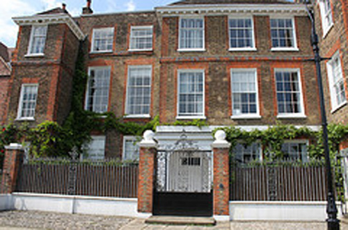
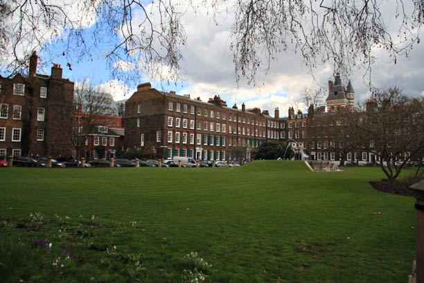
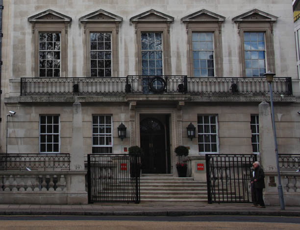
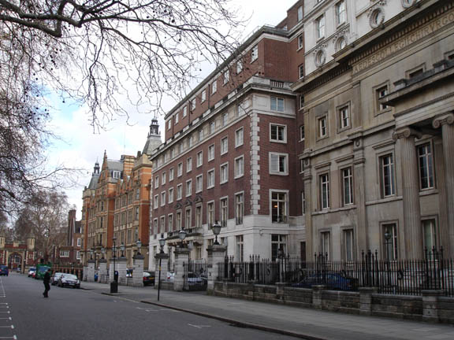
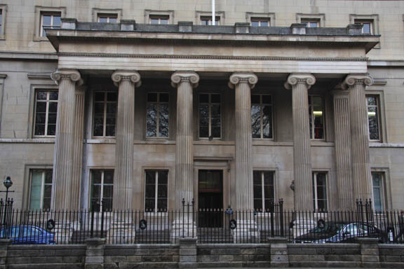

Walpole House is used as 'Lady Chatterton's House'. The finest house on Chiswick Mall, the garden front dates to around 1700. It is named after its former occupant, the Hon. Thomas Walpole, MP and nephew of Sir Robert Walpole, England's first prime minister. The house is said to have been the last home of Barbara Villiers, Duchess of Cleveland and mistress of Charles II. She died here 9 October 1709, her ghost was said to appear on stormy nights. Later bought by Jasper Conran for approx. £8 million.

Lincoln's Inns Fields.

Serviced offices at 29 Lincoln's Inn Fields used as 'Major Rich's house'.

Lincoln's Inn Fields South Side.

The Royal College of Surgeons in Lincoln's Inn Fields used as 'Colonel Curtiss's Club'. (Also used in 'After The Funeral').